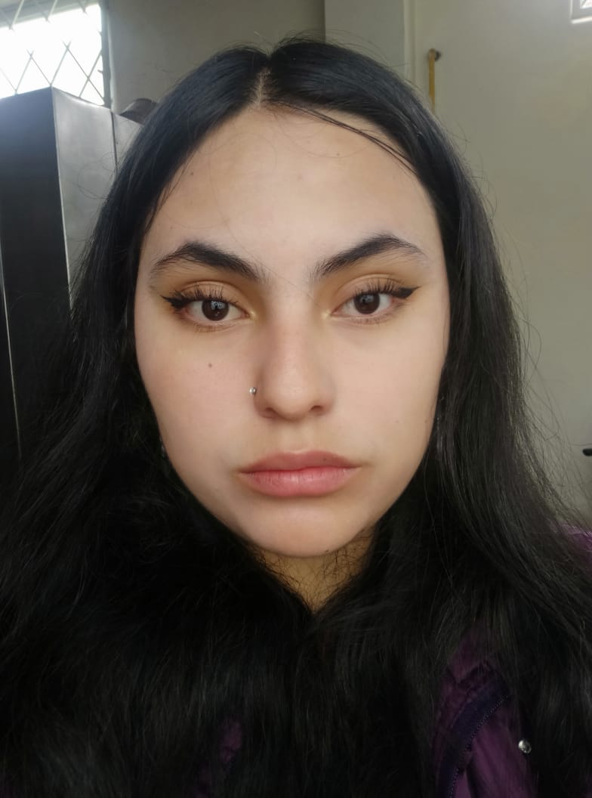

Nombre: Aytanna Scarleth Parraga Lobato
Edad: 18 años
Ciudad de Residencia: Quito, Ecuador
Título: Bachiller en Ciencias
| Actividad | Descripción |
|---|---|
| Pintar | Me encanta pintar retratos y paisajes con acuarelas |
| Escuchar música | Me encanta escuchar música pop |
| Cocinar | Me encanta cocinar platos tradicionales ecuatorianos |
| Deporte | Descripción |
|---|---|
| Fútbol | Me encanta jugar al fútbol con mis amigas los fines de semana |
| Natación | Me encanta nadar en la piscina durante el verano |
| Voleibol | Me encanta jugar al voleibol en la playa durante las vacaciones |
Mi expectativa en la carrera de tecnologías de la información es aprender a programar aplicaciones web y móviles para resolver problemas reales. Además, me gustaría trabajar en una empresa de tecnología innovadora donde pueda contribuir con mis habilidades y conocimientos.